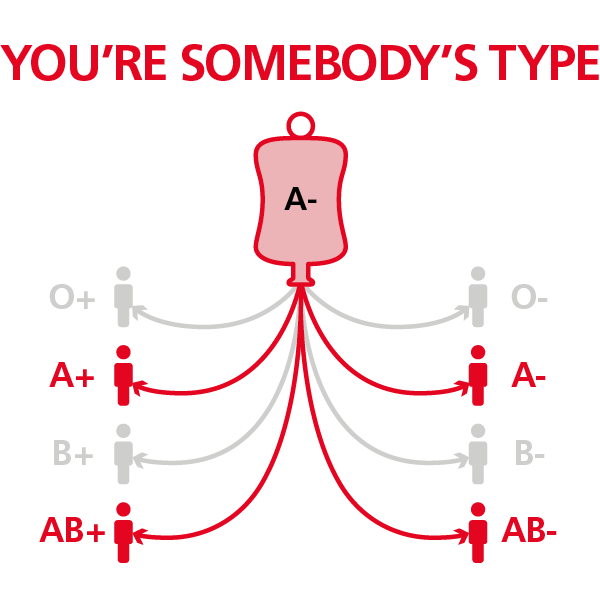

| R.b. |
Hrana |
Preporuke |
| 1 |
divljač |
izbjegavati |
| 2 |
fazan |
neutralno |
| 3 |
golub |
neutralno |
| 4 |
govedina |
izbjegavati |
| 5 |
guska |
izbjegavati |
| 6 |
janjetina |
neutralno |
| 7 |
piletina |
neutralno |
| 8 |
konjetina |
izbjegavati |
| 9 |
kozje meso |
neutralno |
| 10 |
nojevo meso |
neutralno |
| 11 |
ovčetina |
neutralno |
| 12 |
patka |
neutralno |
| 13 |
puretina |
izuzetno dobro |
| 14 |
svinjetina |
izbjegavati |
| 15 |
bakalar riba |
izuzetno dobro |
| 16 |
kavijar |
neutralno |
| 17 |
lokarda riba |
izuzetno dobro |
| 18 |
losos |
izuzetno dobro |
| 19 |
losos dimljeni |
izbjegavati |
| 20 |
mekušci |
izbjegavati |
| 21 |
morski pas |
neutralno |
| 22 |
morski puževi |
izbjegavati |
| 23 |
morski rakovi |
izbjegavati |
| 24 |
oslić |
neutralno |
| 25 |
plotica |
neutralno |
| 26 |
puž |
izuzetno dobro |
| 27 |
skuša |
izuzetno dobro |
| 28 |
som |
izbjegavati |
| 29 |
sardina |
izuzetno dobro |
| 30 |
šaran |
izuzetno dobro |
| 31 |
tuna |
neutralno |
| 32 |
žabe |
izbjegavati |
| 33 |
američki sir |
izbjegavati |
| 34 |
cottage sir |
izbjegavati |
| 35 |
edamer sir |
izbjegavati |
| 36 |
farmer sir |
neutralno |
| 37 |
feta sir |
neutralno |
| 38 |
gauda sir |
izbjegavati |
| 39 |
jogurt |
neutralno |
| 40 |
kefir |
neutralno |
| 41 |
kokošija jaja |
neutralno |
| 42 |
kozije mlijeko |
izbjegavati |
| 43 |
kravlje mlijeko |
izbjegavati |
| 44 |
livanjski sir |
izbjegavati |
| 45 |
maslac |
izbjegavati |
| 46 |
mocarela |
neutralno |
| 47 |
pačija jaja |
neutralno |
| 48 |
paški sir |
izbjegavati |
| 49 |
plavi sir |
izbjegavati |
| 50 |
sladoled |
izbjegavati |
| 51 |
svajcarski sir |
izbjegavati |
| 52 |
urda sir |
izbjegavati |
| 53 |
vrhnje |
izbjegavati |
| 54 |
adzuk pasulj |
neutralno |
| 55 |
badem |
neutralno |
| 56 |
bijeli pasulj |
neutralno |
| 56 |
crni pasulj |
neutralno |
| 57 |
brazilski orah |
izbjegavati |
| 58 |
crveni pasulj |
izbjegavati |
| 59 |
indijski orah |
izbjegavati |
| 60 |
kesten |
neutralno |
| 61 |
kikiriki |
izuzetno dobro |
| 62 |
laneno sjeme |
izuzetno dobro |
| 63 |
mahune zelene |
izuzetno dobro |
| 64 |
kikiriki puter |
izuzetno dobro |
| 65 |
orah |
izuzetno dobro |
| 66 |
pistaće |
izbjegavati |
| 67 |
suncokretove sjemenke |
izbjegavati |
| 68 |
kukuruz |
izbjegavati |
| 69 |
pšenica |
izbjegavati |
| 70 |
pšenica integralna |
izbjegavati |
| 71 |
pšenične klice |
izbjegavati |
| 72 |
raženo brašno |
neutralno |
| 73 |
riža sve vrste |
neutralno |
| 74 |
sojino brašno |
neutralno |
| 75 |
zobeno brašno |
neutralno |
| 76 |
agar |
izbjegavati |
| 77 |
akacija |
izbjegavati |
| 78 |
aloa |
neutralno |
| 79 |
artičoka |
izuzetno dobro |
| 80 |
bamija |
izuzetno dobro |
| 81 |
blitva |
izuzetno dobro |
| 82 |
brokula |
izuzetno dobro |
| 83 |
tikva |
izuzetno dobro |
| 84 |
bundava |
neutralno |
| 85 |
celer |
neutralno |
| 86 |
čili začin |
izbjegavati |
| 87 |
cikorija (konjogriz) |
izuzetno dobro |
| 88 |
bijeli luk |
neutralno |
| 89 |
đumbir |
izuzetno dobro |
| 90 |
gljive bukovače |
neutralno |
| 91 |
gljive maitake |
neutralno |
| 92 |
gljive shitake |
neutralno |
| 93 |
grašak |
neutralno |
| 94 |
hren |
neutralno |
| 95 |
kelj |
izuzetno dobro |
| 96 |
korabica |
izuzetno dobro |
| 97 |
krastavci sirovi |
neutralno |
| 98 |
kiseli krastavci |
izbjegavati |
| 99 |
krompir ( bijeli, crveni, žuti) |
izbjegavati |
| 100 |
slatki krompir |
neutralno |
| 101 |
kupus kiseli |
izbjegavati |
| 102 |
kupus sirovi |
izbjegavati |
| 103 |
lucerna |
neutralno |
| 104 |
luk |
izuzetno dobro |
| 105 |
luk crveni |
izuzetno dobro |
| 106 |
mahune |
neutralno |
| 107 |
maslačak |
izuzetno dobro |
| 108 |
masline |
izbjegavati |
| 109 |
mrkva |
neutralno |
| 110 |
paprika (crvena, zelena) |
neutralno |
| 111 |
patlidžan |
neutralno |
| 112 |
poriluk |
izuzetno dobro |
| 113 |
paradajz |
neutralno |
| 114 |
repa |
izuzetno dobro |
| 115 |
rotkvice |
neutralno |
| 116 |
špinat |
izuzetno dobro |
| 117 |
tikvice |
neutralno |
| 118 |
zelena salata |
neutralno |
| 119 |
ananas (plod i sok) |
izuzetno dobro |
| 120 |
avokado |
neutralno |
| 121 |
banane |
neutralno |
| 122 |
zova |
izuzetno dobro |
| 123 |
borovnice (plod i sok) |
izuzetno dobro |
| 124 |
breskve |
neutralno |
| 125 |
brusnice (plod i sok) |
izuzetno dobro |
| 126 |
dinje |
izbjegavati |
| 127 |
dunja |
neutralno |
| 128 |
grejpfrut (plod i sok) |
izuzetno dobro |
| 129 |
grožđe (crno i bjelo) |
neutralno |
| 130 |
jabuke (plod i sok) |
neutralno |
| 131 |
jagode (plod i sok) |
neutralno |
| 132 |
kivi |
neutralno |
| 133 |
kokosov orah i mlijeko |
neutralno |
| 134 |
kruška |
neutralno |
| 135 |
kupine (plod i sok) |
izuzetno dobro |
| 136 |
limun (plod i sok) |
izuzetno dobro |
| 137 |
lubenica |
izuzetno dobro |
| 138 |
maline |
neutralno |
| 139 |
mandarine (plod i sok) |
izbjegavati |
| 140 |
mango (plod i sok) |
neutralno |
| 141 |
breskve (plod i sok) |
izuzetno dobro |

More about A- bloodtype here